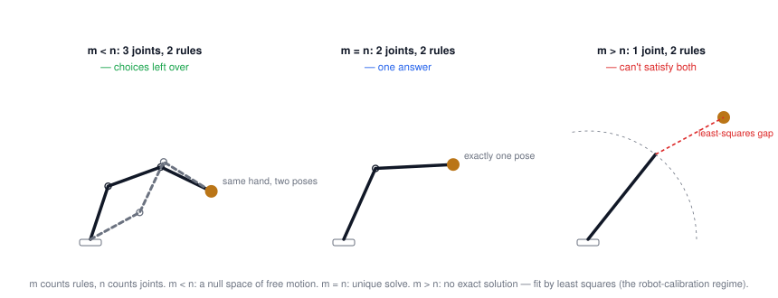
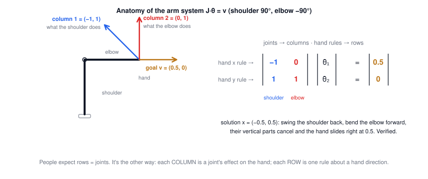

Lecture 2: Linear Systems of Equations
CSE 276C, Lecture 2 · Prof. Henrik Christensen · Numerical Recipes ch. 2, Math for ML ch. 2.1–2.3. All numbers verified in
scripts/lec2/verify.py.- Where robots meet A·x = b
- Anatomy: rows are rules, columns are joints
- The row view
- The column view & independence
- Null space & singularity
- Solving: Gauss elimination & Gauss–Jordan
- LDU: factor once, solve many
- Eigen-decomposition: solving by dividing
- QR, Gram–Schmidt & least squares
- SVD: the universal solvent
- Summary
The big picture
Lecture 1 ended with \(v = \Phi\dot q\): hand velocities from joint velocities. This whole lecture is about that one equation shape. The running example everywhere below is a 2-link arm (links = 1) at shoulder 90°, elbow −90°, whose Jacobian system \(J\dot\theta = v\) is
$$\begin{pmatrix} -1 & 0 \\ 1 & 1 \end{pmatrix} \begin{pmatrix} \dot\theta_1 \\ \dot\theta_2 \end{pmatrix} = \begin{pmatrix} 0.5 \\ 0 \end{pmatrix} \qquad\text{"slide the hand right at 0.5, keep its height"}$$| robotics problem | what you have | what you need | regime |
|---|---|---|---|
| velocity IK / resolved-rate control | desired hand motion v | joint speeds θ̇ | m = n solve, re-done every tick |
| camera calibration (slides) | many checkerboard constraints | few camera parameters | m ≫ n, least squares |
| plane estimation from a point cloud (slides) | thousands of stair points | 4 plane coefficients | m ≫ n, least squares / SVD |
| redundant arm (7 joints, 6 rules) | a task | one of many joint motions | m < n, null space to spend |
1 · Where robots meet A·x = b
m equations, n unknowns: \(A \in \mathbb{R}^{m\times n}\) maps \(\mathbb{R}^n \to \mathbb{R}^m\). m counts rules, not dimensions of space — a rigid hand can carry up to 6 rules (3 position + 3 orientation), and estimation problems routinely carry thousands.

2 · Anatomy: rows are rules, columns are joints
The single most bug-prone fact in this course:

3 · The row view: each rule is a line in x-space
Draw each row's equation in the space of unknowns (joint speeds). Row i is the set of all x that satisfy rule i; the solution is the crossing.
🕹️ Try it: the row view of the arm system. Slide b₁, b₂ — the lines slide but never turn. A sets directions; b only picks positions.
4 · The column view: b is a mix of the columns
Same equation, transposed intuition: \(A x = x_1\,(\text{col}_1) + x_2\,(\text{col}_2) = b\). The columns span a grid of every reachable b (the column space); solving = finding the recipe. Independence is visible: columns pointing different ways cover the plane; parallel columns collapse the grid onto a line, and most b's become unreachable.
🕹️ Try it: drag the column tips and b. Tilt column 2 onto column 1 and watch the whole plane of options collapse.
Independence test cheat sheet: rows independent ⟺ their lines aren't parallel; columns independent ⟺ their arrows aren't collinear; for square A both happen exactly when det A ≠ 0. And n independent vectors are needed to reach all of n-D — two independent arrows in 3-D span only a plane.
5 · Null space: motion the rules can't see
$$\text{null}(A) = \{x : Ax = 0\}, \qquad n = \dim(\text{row space}) + \dim(\text{null space})$$A null-space vector is a nonzero joint motion producing zero on every listed rule — for the arm, joints moving while the hand (or the ruled part of it) holds still. Dependent columns create it: if col₂ = 2·col₁, then the mix (2, −1) cancels to zero, and (2, −1) is a null direction — one joint doing a job, the other undoing it.
🕹️ Try it: the joint-speed plane split into row space ⊥ null space, with the arm obeying. Tab 3 is the singular straight arm.
🕹️ Try it: two identical arms, different rule lists. Same physics, different verdicts.
Singular ⟺ (equivalently): det A = 0 · rank < n · dependent rows · dependent columns · nonzero null space · no inverse. Six phrasings, one disease.
6 · Solving: Gauss elimination & Gauss–Jordan
Subtract multiples of rows to zero out everything below the diagonal, then back-substitute. The slides' example, verified step by step:
Worked example: the slides' 3×3 system (click to close)
Back-substitute: x₃ = 3, then 4x₂ − 3 = 5 → x₂ = 2, then x₁ = 6 − 2 − 3 = 1. So x = (1, 2, 3) ✓. Gauss–Jordan keeps going (eliminating above the diagonal too) until A becomes I and the right side is the answer — prettier, ~50% more work, same result.
7 · LDU: factor once, solve many
$$PA = LDU \qquad \begin{cases} P & \text{permutation: records the row swaps}\\ L & \text{lower triangular, unit diagonal: records the multipliers}\\ D & \text{diagonal: the pivots}\\ U & \text{upper triangular, unit diagonal: pivots divided out} \end{cases}$$Then \(Ax = b\) becomes three trivial solves: \(Ly = Pb\) (forward), scale by \(D^{-1}\), \(Ux\) (backward). Why bother? Factoring costs ~n³/3 — but it's reusable: each new b afterwards costs only ~n². A controller solving the same-pose system at 1 kHz factors once and streams. (For symmetric positive-definite A, U = Lᵀ — half the work; that's Cholesky's trick.)
LDU is plain Gauss elimination in matrix clothing (below-diagonal only — not Gauss–Jordan). Verified on the slides' A: pivots (2, 4, 1) with the row-swap P.
8 · Eigen-decomposition: solving by dividing
If square A has n independent eigenvectors: \(A = S E S^{-1}\) (S = eigenvectors as columns, E = diagonal eigenvalues). In eigen-coordinates A just stretches each axis by its λ — so solving is dividing each piece of b by its λ:
🕹️ Try it: A = [2 1; 1 2], eigenvalues 3 and 1 (checks: trace 2+2 = 3+1, det 3 = 3×1 ✓). Drag b and watch the recipe.
9 · QR, Gram–Schmidt & least squares
For independent columns, \(A = QR\): Q has A's column space but orthonormal columns (\(Q^TQ = I\)), R is upper triangular. Built by Gram–Schmidt — peel off projections:
$$u_k = v_k - \sum_{j<k} \mathrm{proj}_{u_j}(v_k), \qquad \mathrm{proj}_u(v) = \frac{\langle v, u\rangle}{\langle u, u\rangle}\,u$$(or via AᵀA's LDU: R = D^{1/2}Lᵀ — the slides' second route). The payoff is over-constrained systems: the least-squares solution \(\bar x = (A^TA)^{-1}A^Tb\) becomes
$$R\bar x = Q^T b \quad\text{(back-substitute)} \qquad\text{— more stable than forming } A^TA$$Worked example: best line through (1,1), (2,2), (3,2) (click to open)
Fit y = c + mx: A has rows (1, xᵢ), b = (1, 2, 2). Both routes give (c, m) = (2/3, 1/2) ✓ — but on nearly-dependent columns, squaring A (forming AᵀA) squares the condition number; QR avoids ever doing it.
10 · SVD: the universal solvent
$$A = U D V^T, \qquad \sigma_i = \sqrt{\lambda_i(A^TA)}, \quad \sigma_1 \ge \dots \ge \sigma_k > 0,\;\; \text{rank}(A) = k$$Any m×n matrix, no exceptions. V's columns (eigenvectors of AᵀA) are input directions, U's (eigenvectors of AAᵀ) are output directions, σ's are the gains. Then everything this lecture promised falls out of one formula:
$$x = \sum_i \frac{u_i^T b}{\sigma_i}\, v_i \qquad\qquad \bar x = V\,\tfrac{1}{D}\,U^T b \;\;(\text{zeroing } 1/\sigma_i \text{ for } \sigma_i \approx 0)$$| situation | what \(\bar x = V\frac1D U^Tb\) gives you |
|---|---|
| A non-singular | the unique solution |
| A singular, b reachable | the solution closest to the origin (minimum norm) |
| A singular, b unreachable | the least-squares solution |
Worked example: the slides' near-singular matrix (click to close)
\(A\) = all-ones with 1.01 on the diagonal. Eigenvalues: 3.01, 0.01, 0.01 ✓ — "you barely have full rank". Condition number K = σ₁/σ₃ = 301. Consequence, verified: solving Ax = b with b = (3.01, 3.01, 3.01) gives x = (1, 1, 1); perturb b by just 0.27% and x becomes (2, 1, 0) — an 82% change. Error amplification ≈ the condition number. Gauss elimination happily "succeeds" here; only the σ's warn you.
11 · Summary
- Read A·x = b three ways: rows = rules (lines crossing at x), columns = effects (b as a recipe), map = \(\mathbb{R}^n \to \mathbb{R}^m\).
- Null space = motions the rules can't see; it belongs to the task and the pose; singularity = it appearing unannounced.
- Elimination solves; pivoting keeps it honest; LDU makes it reusable (n³/3 once, n² per b).
- Eigen-decomposition is insight, not speed: solving = dividing by λ; tiny λ = sensitivity.
- QR is the stable path to least squares; SVD is the universal one — rank, null space, condition number, minimum-norm and LSQ solutions, all from the σ's.
| tool | one-line idea | cost | use it when |
|---|---|---|---|
| Gauss / Gauss–Jordan | eliminate below (/ everywhere), substitute | n³/3 | one-off square solves |
| LDU / LU | elimination, recorded for reuse | n³/3 + n² per b | many b's, control loops |
| eigen (SES⁻¹) | diagonalize; solve by dividing | > LU | insight, stability, subspaces |
| QR | orthonormalize the columns | O(n³) | least squares, stably |
| SVD | gains σ between input/output directions | ~2–3× LU | rank, sensitivity, near-singular, m ≠ n |
⚠️ Typos in the slides to watch out for
- Slide 7: A's entries repeat "a₀₁ a₀₁" and "a₁₁ a₁₁" — should run a₀₀ a₀₁ a₀₂ … per row.
- Slide 25: "U is m×m w. columns are the eigenvectors of AᵀA" → U's columns are eigenvectors of AAᵀ; V's are AᵀA's (slide 29 has it right).
- Slide 29: "nullspace(A) = first n−k columns of V" → the last n−k columns (those with σ = 0); also "V are the eigenvalue of AᵀA" → eigenvectors.
- Slide 31: "Sensivity" → Sensitivity; the solve formula's "(UDVᵀ)⁻¹v" → b.
- Slide 11: "invertable" → invertible.
- Slide 20: A = SES⁻¹ — here "E is a diagonal matrix … elements are the eigenvalues", S eigenvectors; later slides swap the letters D/E — same object, don't be thrown.